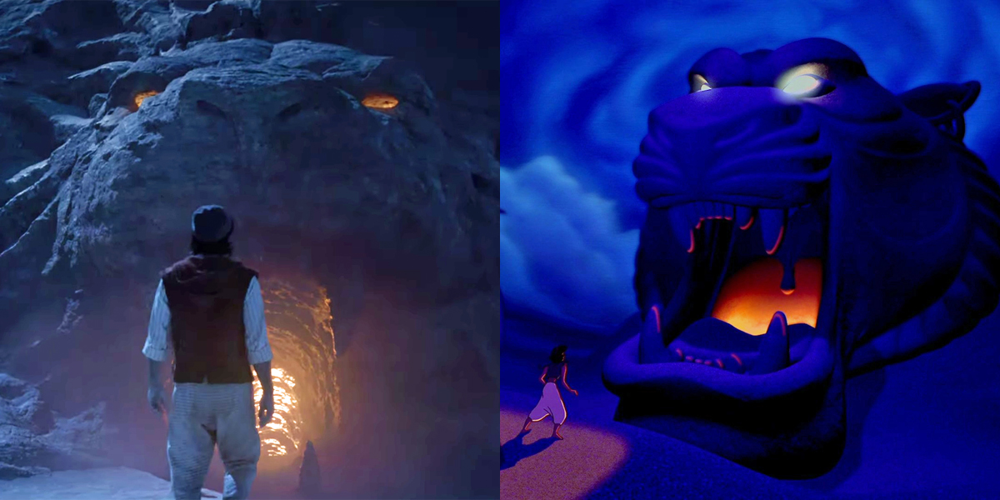

Cast Aladdin
Mena Massoud

Naomi Scott

Will Smith

Marwan Kenzari

Navid Negahban

Nasim Pedrad

Nurman Acar
Nurman Acar was born on October 7, 1974. He is known for starring as Jafar's right-hand man in Disney's musical fantasy film, Aladdin.Frank Welker
Frank Welker reprises his three roles as:Abu, Aladdin's kleptomaniac but a loyal pet.
Rajah, Jasmine's protective pet who communicates through growling, roaring, and grunting.
Cave of Wonders, A sand guardian that resembles the giant head of a lion.

Alan Tudyk